Cómputo Paralelo
Bienvenida
Edición provisional. Contenido de muestra pendiente de validación académica. Los títulos y la organización se basan en el programa proporcionado; los desarrollos y ejercicios son provisionales.
Bienvenida y bienvenido al polilibro de Cómputo Paralelo de Ingeniería en Inteligencia Artificial. Aquí explorarás cómo dividir problemas, coordinar tareas y evaluar soluciones que aprovechan varios recursos de procesamiento.
El recorrido abarca arquitecturas paralelas, diseño de algoritmos, memoria compartida, sistemas distribuidos y flujo de datos. Solo están habilitados el tema 1.1, su actividad interactiva y la actividad final de la unidad I como ejemplos de prueba. El resto está pendiente de validación.
Trabaja con ejemplos, compara alternativas y explica tus resultados. El propósito del programa es diseñar aplicaciones paralelas con base en el cómputo paralelo.